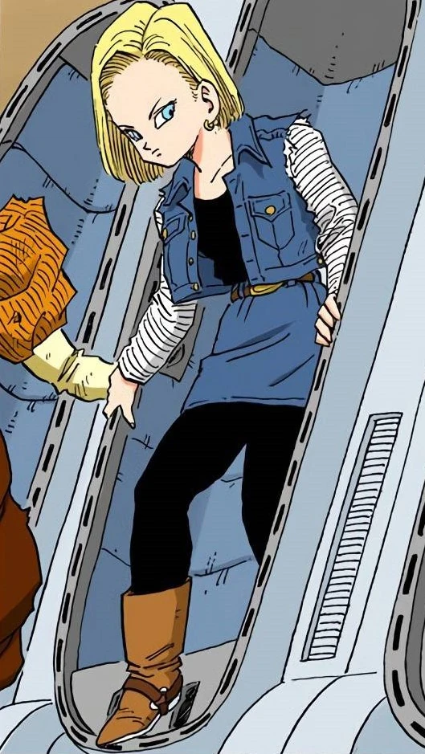

Android 18 (人じん造ぞう人にん間げん１８号ごう Jinzōningen Jū Hachi-Gō), originally named Lazuli (ラズリ Razuri)[4] when she was an ordinary human, is the older twin sister of Android 17 and Dr. Gero's eighteenth android creation, designed to serve Gero's vendetta against Goku.
While her interests do not initially deviate from this expectation, her curiosity to activate Android 16, in spite of Gero's orders not to do so, leads Android 17 to take it upon himself to rebel and murder Gero.
Eventually, Android 18 becomes a member of the Z Fighters, as well as the wife of Krillin and the mother of their daughter Marron.
Android 18 usually displays a cool and confident demeanor, especially in battle, although her sarcastic and biting humor is the most prominent trait of her personality.
This is demonstrated when Goku takes notice of her assembly with the Dragon Team at the 25th World Martial Arts Tournament, leading to the retort "Look, he noticed.
How cute." (In the Japanese version she says, "Took you a while idiot!"), as well as dryly saying "Spare me" when Krillin reveals to Goku that not only have they married, but also had a child.
Shortly after this, she is asked by the World Tournament Announcer if her real name is legitimately "No.
18", to which she responds, "My father was pretty dull" (In the Japanese version, she replies that "It doesn't matter" before tossing the number at the World Tournament Announcer).
Although she isn't characterized for this, 18 can be very curious if she is really interested in something, to the point of activating her comrade Android 16 and wondering what present she will give to her husband Krillin during a dispute of a wish with the others using the Dragon Balls.
She often expresses herself in her cool and downplayed manner well into her marriage with Krillin, often smiling in a somewhat subdued fashion that conveys her very laid-back personality, in Super, however, she is often seen smiling.
However, 18's sense of humor is not always tactful, as she jokingly expressed to Future Trunks that she wanted reimbursement for him killing her alternate universe counterpart, much to Future Trunks' displeasure.
This is a rare instance where Android 18's humor was anything but tactful, as per her usual timing.
This failure is likely due to Android 18 being unaware how murderous her counterpart was and how much Future Trunks had suffered because of it, as she likely would have been more sensitive had she known the full extent of the destruction and suffering caused by her and her brother's counterparts.
She is also shown to be rather prideful, though not to the same extent as her brother had been during the Imperfect Cell Saga.
As an older sister and delinquent, and later as a wife and martial artist, Android 18 is shown to be outwardly commanding, insisting that she and her brother 17, and later she and Krillin, have to make strides to improve the family's financial situation, insisting Krillin to join the Tournament for the prize money, forcing Mr. Satan into a deal about giving her 20 million Zeni to the point of destroying his property and cowing him into multiplying the prize money a hundred-fold, wanting Shenron to grant her wish for a present for Krillin, and initially saying that she would only fight at the Tournament of Power if she gains a large sum of money for it although she later decides to enter because she suspects that the tournament is not really a game.
In Dragon Ball Z: Supersonic Warriors, Android 18 is hinted to dislike driving solely because of Android 17's insistence on driving around aimlessly without anything better to do.
However, 18 still exhibits some of her sensitivity and even protective side, especially towards her twin brother, daughter, and husband.
This is in stark contrast to her alternate self from Future Trunks' timeline, where she is a murderous sociopath who cares for no one but herself and her brother though this is mainly due to the fact that Future Dr. Gero had altered Future 17 and 18 to hate humanity, which never occurred in the main timeline.
18 also possesses a vast distaste if not outright hatred of violence against children, to the point that after witnessing Lord Beerus's attacks against Gotenks she lost her temper and proceeded to assault him, despite his decisively superior power.
This is likely due to her instincts as a mother and fondness for her friends' children despite being frequently annoyed by the underage Super Saiyans.
Unlike her brother, she, like Goku and any other fighter, sometimes has the tendency to let her guard down during battle, allowing her opponents to take advantage, primarily because of her cool and laid-back attitude, as demonstrated by Shosa in the tournament.
Like her brother, she developed hatred towards Dr. Gero for modifying them against their will, though interestingly, she still uses the name No.
18 instead of her original name Lazuli and in the dub even refers to Dr. Gero as her father, albeit sarcastically (as he was the one who gave her the name No.
18) when asked about her name during the World Tournament.
It was this shared hatred and distrust of Gero that convinced 18 that Cell was only imitating 17's voice to trick her.
Though she lacks her future counterpart's sociopathic and murderous personality, she does share her counterpart's love of shopping and interest in fashion, as well as taking care in maintaining her appearance and dislikes having her clothing or hair damaged in battle.
In the anime, she is shown to dislike Chi-Chi's Chinese dresses while trying her clothes when the Androids come to Goku's House looking for Goku.
This is in contrast with her future counterpart who had no problem with the Chinese dresses she tried on while shopping for clothes during The History of Trunks special, showing that she and her counterpart apparently have different tastes in fashion.
By the time of Dragon Ball Super, Android 18 seems to have grown kinder and more compassionate, is often seen smiling and is closer to Krillin and Marron compared to Z, where she is shown always folding her arms and looking withdrawn from her allies (like Vegeta and Piccolo, with the former before being accustomed to earthly society), only smiling when she sees her daughter and participating in some activities with others, like in the God of Destruction Beerus Saga, she participates in the bingo tournament.
When she encounters Future Trunks after so many years, she is shown to be more kind and friendly to him than the last time they met, giving him a fist bump and joking about her future self's death.
Android 18's close relationship with Krillin had led her to want to give a present for him, which she wanted to use the Dragon Balls to wish for a present, when Bulma told 18 that having her and Marron is better than having any present, she was struck with flattery, causing her face to blush, implying that she really loves her husband, and even cheers for him during Universe 6 and Universe 7's baseball match.
In addition, she also ended up joining the Tournament of Power, not due to money, but because she suspected from both the increasing prize money, Goku and Gohan's increasingly desperate offers to have them join, and Gohan's serious disposition that the results if they lost the tournament would be very severe.
However, she is cold towards her brother after reuniting with him for the tournament and tells Krillin not to force it when he tries to break the ice by initiating a friendly conversation with his brother-in-law.
She also threatened to kill her brother if he mispronounced Marron's name as "Maron" a second time (however this may be due to it reminding her of Krillin's ex-girlfriend Maron, or it could have been a sanctimonious, empty threat), indicating that she and her brother have grown distant since the Imperfect Cell Saga.
Despite this, both siblings are still capable working well together as a team during the Tournament of Power and even strategize together in the heat of battle to take advantage of their infinite stamina.
Android 18 also nevertheless still deeply cared for him, as she was very distraught when he seemingly killed himself to save Goku and Vegeta along with Universe 7.
In Xenoverse 2, she states she has been working with Krillin on attack coordination and that it reminds her of the old days fighting alongside her brother, though notes that she and 17 would never actually try and attack deliberately together, as they simply just naturally had good timing due to being twin siblings.
However, she notes that it is not the same with Krillin as she needs to focus more on Krillin and use more concentration when coordinating her attacks with his, though she doesn't mind it really.
However, she still at times retains some of her original cool and sarcastic nature, as evidenced by the Peaceful World Saga, where she offhandedly mentioned that "even the likes of Krillin" could beat Wild Tiger after seeing Pan beat him.
In the events in Dragon Ball GT, Android 18 has a very close attachment to her now older daughter, Marron and protects her when she is in danger.
When Krillin was killed by her brother, Android 17 due to Hell Fighter 17's control, Android 18 emotionally cries over her husband's death despite being a cyborg and admitting she loves him as she shows her vengeful rage to her brother for what he had done.
When she confronts her brother for the second time, she smiles at Goku due to his friendship with her husband as she assists him to avenge Krillin's death.
She was also shown to be aware of Goku's quirk of using his tail to touch the crotches of females to determine their gender, which humorously led to a confrontation between the two in Shin Budokai where she attempted to fight him off largely because she didn't want him to do that, despite Goku assuring her that he outgrew that trait.